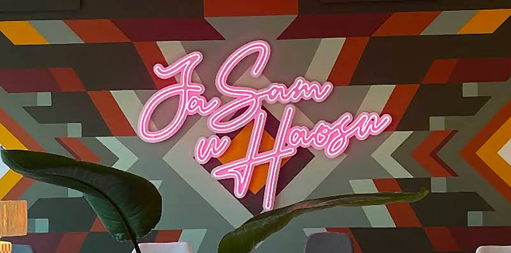

Мой разбор тестового задания на позицию SMM-менеджера Haos. Каждый пункт разложен отдельно, статус виден сверху.
«The Only Community Space You’ll Ever Need». Первый invite-only коворкинг для стартапов в Белграде: стартапы, предприниматели, креативные люди.
Теразие: центр, рядом с отелем «Москва», большие окна на парк. Artklasa: новое пространство у Дуная, в культурном центре Silosi. Ресторан, specialty-кофе, терраса, телефонные будки.
@haos.space · 5 315 подписчиков. Хайлайты: Market, Find Artklasa, Events, Special Offers, Private Office, Breakfasts.
Сначала комьюнити, потом рабочее место. Эксклюзивность без пафоса, luxury без высокомерия.
Комьюнити продаётся лицами и разговорами. Живые кадры, не постановочные улыбки в камеру.
Свет, фактуры, детали: чашка, книга, вид на парк. Без золота, неона и слова «премиум».
Название даёт право на дерзость: смелая типографика, кадры «вне сетки», юмор в подписях. Неоновая надпись «Ja sam u Haosu» уже готовый фирменный символ.
По скриншотам сайта и профиля. У бренда уже есть сильная база, её стоит собрать в систему, а не придумывать заново.
Тёплая земляная гамма с зелёным и мятой выглядит цельно и совпадает с интерьером: терракотовые диваны, оранжевые кресла, бархат, растения. Это и есть «luxury без высокомерия» в цвете.
8–12 референсов того, какой я вижу страницу Хаоса. К каждому пишу, что именно мне в нём нравится: цвет, композиция, свет, подача людей. Сетка ниже помогает охватить разные стороны ленты, а не собрать десять похожих интерьеров.

Здесь меня вдохновил сам знак. С одной стороны, пастельные тона фона, с другой, неоновая вывеска. Это сочетание можно перенести на оформление страницы и на наше лого: «хаос» с одной стороны, порядок и комфорт с другой.
Если пролистать их профиль, видно, что цветовая гамма со временем меняется. Нам тоже стоит взять это на заметку. Вопрос только в том, какой период выбрать для смены гаммы: месяц или, например, сезон.
members club interior editorial · quiet luxury office photography candid coworking portraits film · creative studio instagram grid event poster minimal typography · brutalist type poster coworking breakfast aesthetic · belgrade architecture film photo neutral feed instagram grid · editorial carousel design
Я искала аккаунты, на которые Хаос ещё не подписан, чтобы найти новые идеи, а не повторять то, что у нас уже есть. Для каждого пишу, что меня зацепило и как это можно применить у нас.
Мне понравилось, что анонс мероприятия у них делается не на однотонном фоне, а с картинкой. Мне кажется, так он гораздо сильнее цепляет глаз.
Делать анонсы на фото или иллюстрации, а не на плашке одного цвета.
У них календарь событий выходит отдельным постом.
Сделать отдельную вкладку в актуальных с сеткой ивентов. Она как раз покажет комьюнити-составляющую. Если не хочется перегружать актуальные, можно делать это постом, чтобы история всех ивентов оставалась в ленте профиля.
Смотреть пост →Мне понравилась вкладка в актуальных с BTS.
Своя BTS-вкладка, куда можно скидывать весь материал с ивентов, который наснимали мы и участники. Это добавит странице жизни: сейчас посты с ивентами у нас есть, но негде посмотреть или пересмотреть то, что уже произошло. Текущая вкладка «Events» больше про наши локальные вечеринки, чем про еженедельные мероприятия, и её можно расширить.
Мне понравился их первый пост в закрепе: гайд по городу.
Гайд по Белграду. В последнее время к нам приходит много иностранных резидентов и гостей города, и они часто спрашивают у меня и у администраторов, что посмотреть, какие есть интересные места и где поесть. Грань между нашей рекомендацией и рекламой здесь тонкая, поэтому эту рубрику можно перенести в Telegram-канал.
Смотреть пост →Мне понравилось, что три первых закреплённых поста визуально соединены в один блок.
Оформить закреп так же: три поста, которые вместе читаются как одна картинка и сразу задают тон профилю.
У них много контента с резидентами. Здесь у меня возникла идея скорее практическая, чем визуальная.
Некоторые наши резиденты сами предлагали организовать воркшопы и активности в коворкинге. Я много говорю с людьми, и мне они рассказывают свои идеи, но подойти к кому-то из стаффа и предложить им бывает неловко. По моим наблюдениям, резиденты боятся отказа и не чувствуют нашей заинтересованности в них и в том, что они предлагают. Я считаю, это нужно менять: если у кого-то появляется идея, идти навстречу и давать сделать что-то не для широкой публики, как лекции и ивенты, а для резидентов. Это хороший способ в безопасной обстановке проверить, что работает, а что нет. А то, что сработает, потом можно расширять.
Мне понравилась их рубрика to-do list, чем-то похожая на бинго.
Сделать свой список. Тут нужно решить, на чём фокусироваться: на активностях внутри Хаоса, за выполнение которых резидент или гость с дневным пропуском получает что-то приятное, или на более широком формате про повседневную жизнь.
Смотреть пост →Мне понравилась идея с name tags.
Каждый раз, когда мы делаем новые стикеры для Хаоса, устраивать конкурс среди резидентов. Идею, которая наберёт больше всех голосов (например, в голосовании в Telegram-канале), печатаем как стикер.
Смотреть пост →У них мало актуальных, и это удобно.
Почистить и систематизировать наши актуальные: оставить то, что регулярно обновляется, и базовую информацию.
Мне понравился пост про национальности.
Делать такой пост, например, раз в квартал. Сейчас к нам особенно часто приходят иностранные гости.
Смотреть пост →Пока только ключевые даты, чтобы видеть каркас. Формат по брифу: 2–3 поста в неделю, сторис через день.
Старт кампании Юры Соколова: за три недели до ивента
Украшаем к Хэллоуину
Завтраки для резидентов
Юра Соколов: «Как бутстрапить бизнес от 1 до 10 млрд»
Хэллоуин
Этот пункт не делаем.
Идея простая: у каждой публикации есть цель, и мы смотрим метрику именно этой цели. Охват сам по себе ничего не говорит, если пост должен был привести заявки на ивент.
| Цель поста | Главная метрика | Дополнительно | Где смотреть |
|---|---|---|---|
| Узнаваемость | Охват неподписчиков | Репосты, досмотры Reels, удержание первых 3 секунд | Instagram Insights |
| Ценность | Сохранения | Сохранения на 1000 охвата, время досмотра карусели | Insights |
| Комьюнити | Комментарии и ответы в сторис | Отметки Хаоса резидентами, сообщения в директ | Insights, директ |
| Ивенты | Регистрации | Клики по ссылке, переходы с UTM, стикер «ссылка» в сторис | Форма регистрации, UTM |
| Продажи мест | Заявки на вступление | Визиты профиля, клики на сайт | CRM или таблица заявок |
Абсолютные цифры сравнивать нечестно, если охват разный. Поэтому считаем доли: сохранения, репосты и комментарии на 1000 охвата (ER по охвату).
Заносим цифры поста в общую таблицу. Сторис смотрим через 24 часа: досмотр от первой к последней, выходы, ответы.
15 минут: топ-3 и худшие 3 публикации недели, одна гипотеза почему.
Итог по рубрикам и форматам, рост подписчиков, заявки и регистрации. Выводы идут в план следующего месяца.
Рубрика стабильно выше среднего по своей цели: даём ей больше слотов.
Тема работает, а формат нет: пробуем ту же тему каруселью вместо фото или Reels вместо карусели.
Два-три месяца ниже среднего: освобождаем слот под тест новой идеи.
Для ивентов отдельная воронка: охват анонса → клики → регистрации → пришли. После 21.10 сравним, какие касания дали больше регистраций, и используем это для следующих ивентов.